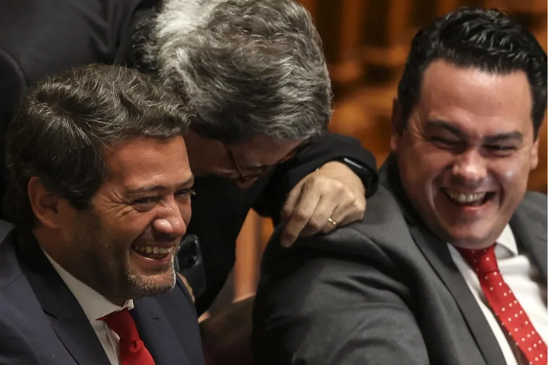

— CRÓNICA
A política como “representação”

Ao que tudo indica, nos dias em que a região centro foi assolada por violentas tempestades, os canais oficiais do partido Chega terão difundido um vídeo nas redes sociais que mostra o seu líder a carregar garrafões de água na mala de um carro debaixo de chuva, tendo aumentado a intensidade da chuva por meios digitais. Sabemos muito bem que a propaganda é a alma do negócio, mas uma manipulação tão grosseira merece alguma atenção. Na última década, a comunicação política tem-nos oferecido discursos e atitudes que teriam sido impensáveis até há não muito tempo atrás, mas que hoje na verdade já não nos surpreendem assim tanto. Pensemos, a nível internacional, no grotesco fluxo semi-improvisado de Donald Trump, um misto de auto-celebração, insultos e mentiras, que o próprio já transformou numa figura de estilo, batizando-a de “the weave”. Ou, aqui mais perto, no comportamento vergonhoso do deputado do Chega Filipe Melo que, durante os trabalhos da Assembleia da República, dirigiu palavras e gestos de cariz racista e machista a duas colegas deputadas. Comportamento que, porém, não parece ter suscitado qualquer vergonha no seu autor, que ainda não apresentou um pedido de desculpas, apesar de ter sido instado nesse sentido no âmbito de um inquérito parlamentar. A falta de vergonha não parece aqui apenas um defeito pessoal, uma falta de estilo ou de educação, mas um dos elementos centrais de uma certa forma de ação política. Lembremos ainda um outro momento também muito significativo, quando o então candidato à Presidência da República André Ventura disse abertamente e sem hesitar que, caso viesse a ser eleito, não seria o presidente de todos os portugueses. Trata-se de uma declaração surpreendente, se considerarmos que tradicionalmente é quase que um lugar-comum da retórica dos candidatos à Presidência dizer que, uma vez eleitos, irão representar todos os cidadãos, inclusive os que não votaram neles. Como fez, de resto, em mais de uma ocasião, antes e depois da vitória, António José Seguro.
A esta “mudança de fase” das formas do discurso político, de que exemplos não faltam, chamamos populismo, considerando-a, justamente, associada a uma crise da representação. Motivo de alegria e de tormento da nossa vida política, com todos os seus limites e efeitos perversos, a representação é o mecanismo fundamental das democracias modernas, pelo menos nas suas formas institucionais. Já há um par de décadas que as práticas e as instituições que, através de muitas lutas e negociações, vieram a ser desenvolvidas para, a bem ou a mal, evocar e traduzir em ação política a sempre fantasmática “vontade do Povo”, mostram estar em dificuldade. Parece-me poder ser produtivo interpretar os fenómenos a que assistimos hoje como uma passagem à representação no seu sentido teatral. As intervenções de Trump e de Ventura podem ser lidas então como tendo o objetivo, não tanto de representar politicamente os seus eleitores – isto é, de interpretar, mediar, negociar e, nos casos mais virtuosos, de os inserir num projeto de futuro comum – mas de os representar teatralmente: encenar os seus afetos, dar corpo aos seus ressentimentos, performar as suas frustrações. Estas figuras não procuram articular demandas em propostas, mas manter viva a própria energia da demanda.
Décadas de tecnocracia, de decisões tomadas em nome de imperativos técnicos supostamente neutros, criaram populações que se sentem espetadoras da própria vida política. Uma resposta adequada e efetiva implicaria uma profunda reestruturação das relações de poder e das formas de distribuição de riqueza e de participação. Para evitar isso, eis que se tenta manter tudo como está, mantendo o corpo político em constante fibrilação e apontando uma causa que é simultaneamente interna e externa: os estrangeiros no território nacional, mas progressivamente também os que protestam e resistem, aqueles que, supostamente, odeiam a pátria e a sua história. Trata-se de permanentemente recriar uma atmosfera de agressão, escândalo e ressentimento, mantendo em constante mobilização afetiva os que já não são vistos como cidadãos, mas sim como potencial eleitorado. Em vez de procurar soluções funcionais, há a vontade deliberada de manter a tensão em alta. É, obviamente, uma forma de produção de subjetividades coletivas – não é apenas loucura, tem uma lógica perversa, mas eficaz. Cria grupo através dos argumentos mais retrógrados possíveis: identidade étnica, racismo, medo dos outros, medo do futuro. Esta política funciona precisamente porque responde a bloqueios reais, devidos tanto ao longo trabalho de “dessocialização” realizado pelas políticas neoliberais, como ao que parece ser o esgotamento das perspetivas de emancipação coletiva. O teatro do ressentimento parece oferecer algo que a política normal já não oferecia: a sensação de participar, mesmo que seja através da identificação com a transgressão alheia. E a energia que não encontra investimento em formas de intermediação, seja dentro ou fora das instituições, está disponível para ser reinvestida em manifestações de poder direto e imediato. É por isso que o assédio e o “vai para a tua terra” do Filipe Melo ou a exposição dos nomes de crianças estrangeiras por parte de Rita Matias não são apenas parolice, conversas de café que de repente subiram ao palco, são também o mecanismo da “representação” política a funcionar. Uma representação teatral do poder que, desprovida de qualquer projetualidade efetiva, só pode assumir a forma de coerção e de exclusão. Assim, a proximidade com os movimentos de extrema-direita neofascista não é mera contingência ou oportunismo, mas o anúncio do seu desfecho natural.
Não surpreende que estas personagens aparentemente grotescas e claramente inadequadas ao cargo recebam, muito discretamente, apoio financeiro por parte de grupos económicos e fortunas individuais. Enquanto se empenham na sua performance e mantêm os seus corpos políticos, que se sentem assim “representados” nos ecrãs dos telemóveis e das televisões, numa vibração afetiva constante, nos bastidores a acumulação de riqueza pode tranquilamente prosseguir o seu caminho. A mobilização sem futuro, toda transfixa num passado supostamente glorioso de ordem e hierarquia, deixa plena margem de manobra para que o poder no seu sentido mais vertical e violento possa atuar sem prestar contas a ninguém. Que o líder do Chega tenha chegado à segunda volta das presidenciais e ficado em segundo lugar com um terço dos votos deve preocupar quem acredita que a política é a “arte de viver juntos”. No entanto, a vitória de António José Seguro com dois terços dos votos não poderia encarnar melhor um desejo de retorno à política mais tradicional. Sóbrio, um pouco cinzento e previsível nos seus lances retóricos, talvez precisamente por isso tenha inspirado confiança e responsabilidade numa fase de grande dificuldade para o país. Estaremos perante uma mera pausa na rápida ascensão da política como “representação” ou perante os primeiros sinais de uma ressaca?